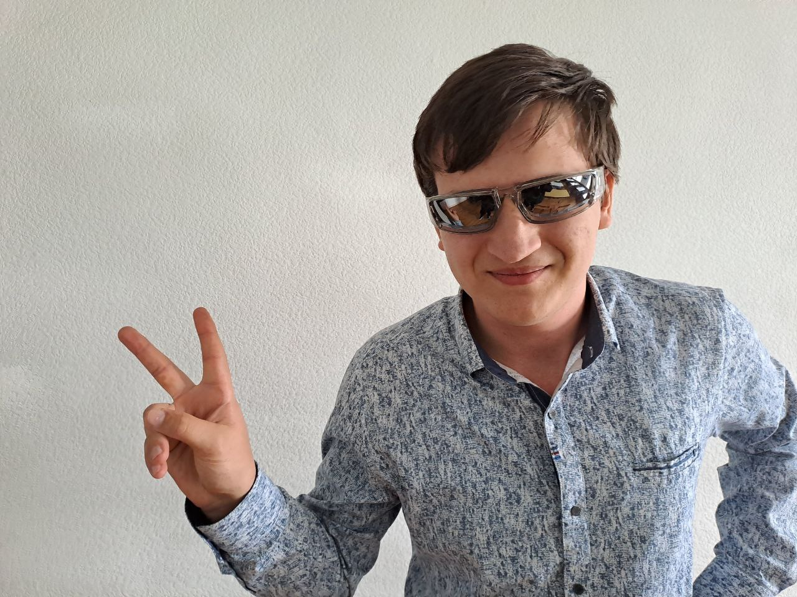
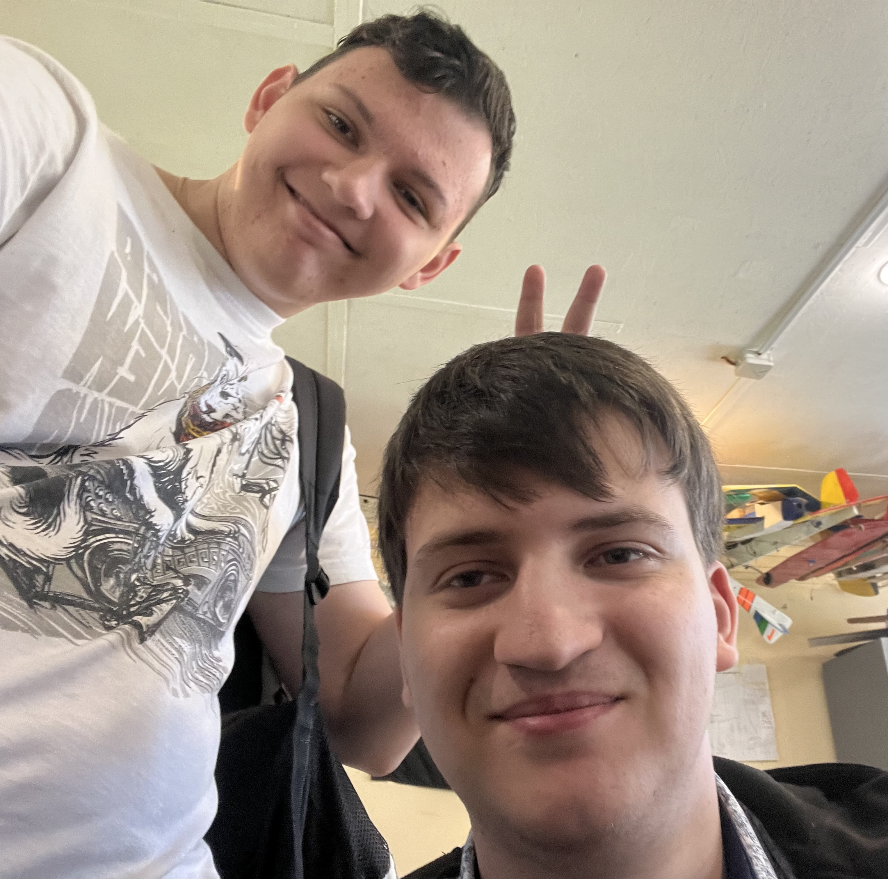
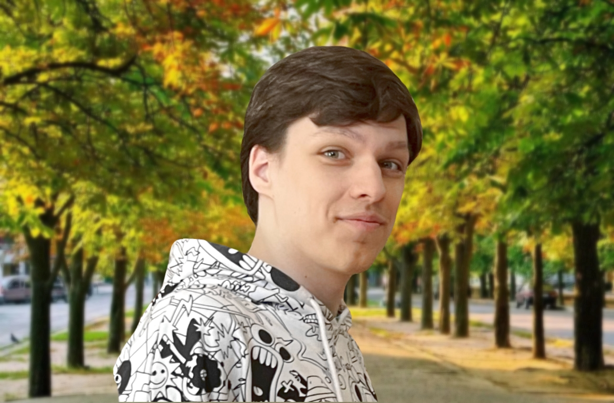
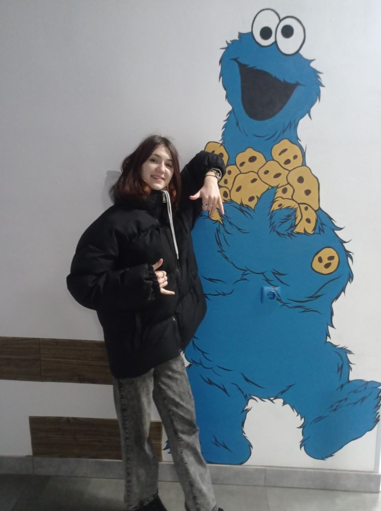
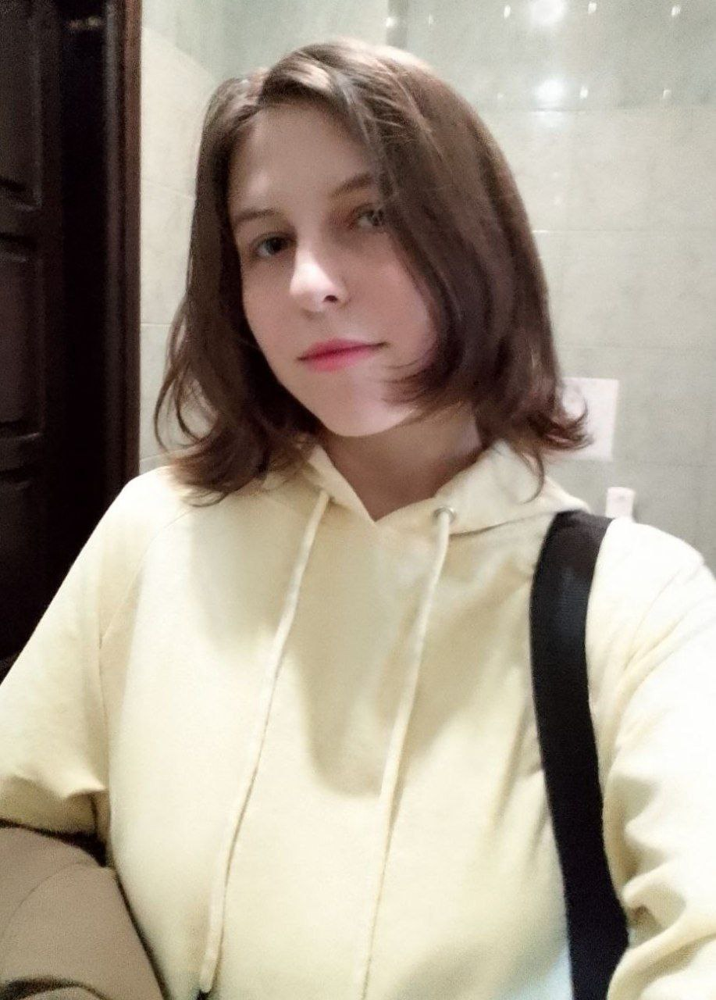
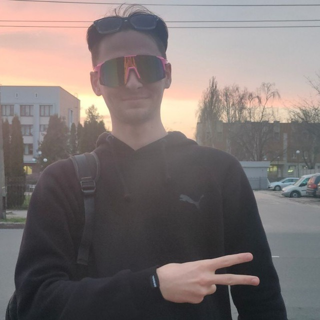
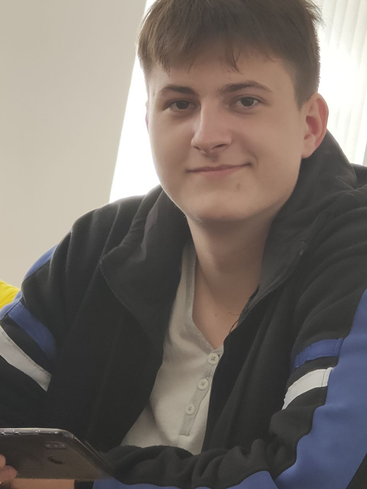
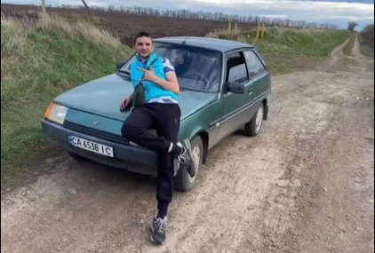
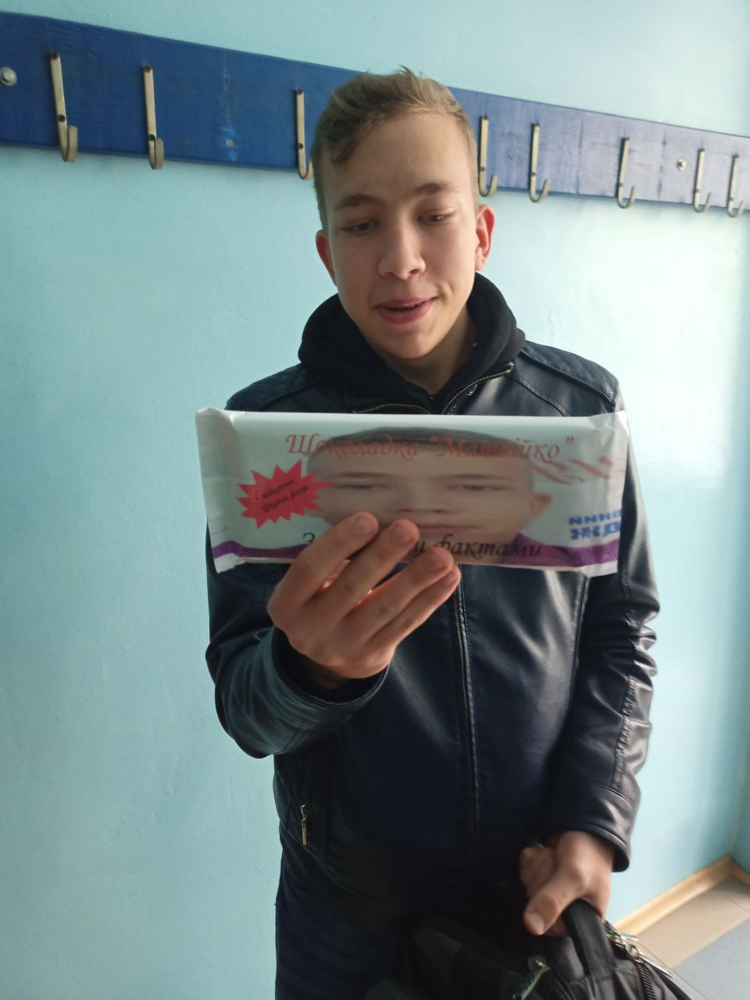

"Мотайленко Олександр — староста нашої групи. Він завжди виручає товаришів, будь то з питань навчання чи особистих проблем. Його доброзичливість і готовність допомогти роблять його справжнім лідером. Він завжди знаходить рішення навіть у найскладніших ситуаціях. Його кмітливість і доброта роблять його незамінним другом для всіх".


"Садчиков Владислав — це веселий та добрий хлопець. Він завжди готовий підтримати друзів і розсмішити їх. Влад також дуже працьовитий – завдяки його наполегливості він досягає вражаючих результатів у навчанні та роботі. Його чесність завжди вражає оточуючих, а кмітливість допомагає знаходити нестандартні рішення для будь-яких завдань."
"Янчишен Ян — розумний та завжди готовий допомогти. Його доброта та працьовитість роблять його справжнім прикладом для інших. Він завжди старанно виконує свої обов’язки та прагне досягти високих результатів. Його доброзичливість і розум допомагають йому в будь-якій сфері життя".


"Мартиненко Максим – розумний, чесний та креативний хлопець. Він завжди повний енергії та старанно працює над своїми цілями. Його друзі завжди можуть розраховувати на нього, а його рішучість та винахідливість роблять його справжнім лідером".
"Мазурок Вікторія" – красива, добра та аккуратна дівчина. Її почуття гумору завжди роблять день яскравішим, а відкритість допомагає їй знаходити спільну мову з усіма. Її друзі завжди цінують її позитивний настрій та відданість".


"Костоломова Дар'я' – гарна, добра та аккуратна дівчина. Її доброта вражає всіх, а її уважність до деталей робить її надійною подругою. Даша завжди старанно працює над своїми завданнями та виявляє кмітливість у вирішенні складних завдань. Її колеги цінують її відданість та інтелект."
"Ковальчук Владислав – енергійний та веселий хлопець. Він завжди готовий до пригод і відкритий для нових знайомств. Його доброта та аккуратність роблять його надійним другом, а почуття гумору додає яскравості в будь-якій компанії. Влад – справжній оптиміст, який завжди піднімає настрій оточуючим."


"Гук Володимир – оптимістичний, чесний та працьовитий хлопець. Він завжди дивиться на світ з позитивом і вірить у краще майбутнє. Його чесність і відкритість роблять його надійним другом, а працьовитість допомагає досягати поставлених цілей. Але, на жаль, іноді він може бути трохи лінивим, але він завжди знаходить спосіб виправити це."
"Леухін Іван – це добрий, оптимістичний та веселий хлопець. Він завжди готовий допомогти іншим та підтримати друзів. Його чесність і відкритість завжди вражають оточуючих. Іван – справжній енергетик, завжди в русі та готовий взяти участь у будь-якій пригоді!"

"Прокопчук Данило – це творчий, веселий та оптимістичний хлопець. Він завжди готовий розповісти веселу історію або придумати щось нове. Його чесність і відкритість завжди вражають оточуючих. Даня – справжній ентузіаст, завжди відкритий для нових ідей та можливостей!"
"Матвій Яценко – це яскрава енергія, що завжди весела та цікава. Він готовий допомогти, завжди з приголомшливим оптимізмом. Він також знає багато цікавого, любить паяти й грати в ігри про космос."
